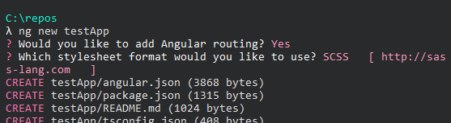
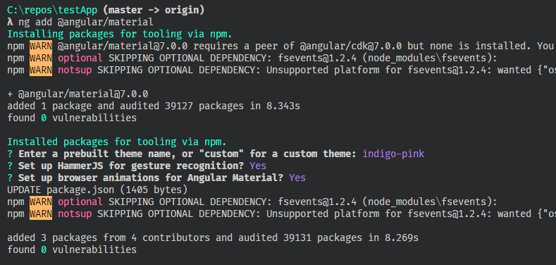

Angular v7 is here!
Angular Core
Angular Elements
Content projection is now supported.
Ivy
Work is ongoing. You can opt-in now to check it out. There are lots of tutorials out there to do so.
Dependency updates
Updated dependencies, notably Typescript v3.1, RxJS 6.3, and Node 10.
Updates to mat-form-field
Added the native select element inside mat-form-field for performance, a11y, and usability.

Angular CLI
CLI prompts
Prompts when generating a new application to set styles and add a router
Budgets
Default values provided when generating a new application
- Warning at 2MB
- Error at 5MB
Clean up unnecessary polyfills
The reflect polyfills will no longer be enabled by default in order to help performance.

Angular Material
Schematics updates
Get prompted when adding Material.
Material design style updates
The Material controls styles have been updated and there are more customization available on the controls and coming in themes.
Virtual Scroll
Virtual scroll is now available via the CDK. Who doesn't want to scroll forever?
Drag and Drop
The CDK keeps getting better!
Easy updates
Updating is easy if you're using Angular v6
ng update @angular/cli @angular/core
ng update @angular/material